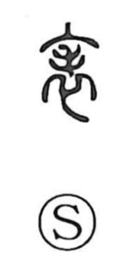

表

Kun: omote, arawasu, arawareru | On: hyo
surface ・ front ・ to express ・ to appear ・ sign ・ chart
Explanation
表 combines 衣, clothing, with 毛, hair. It represents a fur garment worn with the hairy side outward. The fur is the visible face of the hide; the other side lies within. This gives the central meaning ‘outside’ or ‘front surface.’
What is brought to the outside becomes visible. 表 therefore also means to show, reveal, or express something, and to make it known publicly. A visible sign can identify a place or announce a meaning, giving the further sense of a mark or emblem. The opposition of 表 and 裏 begins with the two sides of the garment and continues in the outward appearance and inner side of other things.